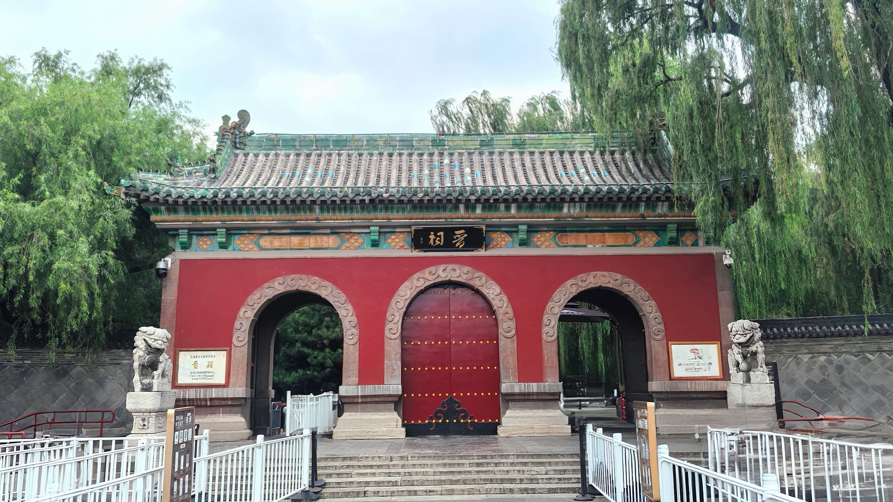
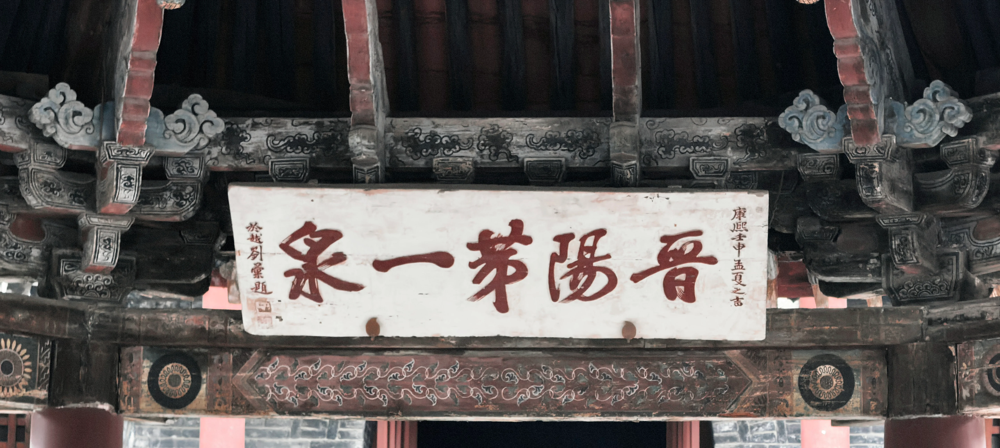

碑前一人诵读
响起两个声音
来自石碑生命两端

Jinci Temple · Boundary of Mortal Realm

Scroll

时间不需要人类所谓的意义
但我们需要
圣母殿右侧鱼沼飞梁，年轻人大排长龙，将鲜活的身影嵌入千年古柏、铁狮与古殿之间，以风华正茂对照亘古遗存。殿左侧难老泉前，多是年长者，耐心等候，只为掬一捧源源不断的泉水，借"难老"二字寓意，祈愿福寿绵长。
于右，望时间回眸：且看我风华正茂；于左，愿时光留步，不求不朽，但求福泽如泉。

望时间回眸：
且看我风华正茂

愿时光留步：
不求不朽，但求福泽如泉
有人拍照打卡离去一气呵成，有人驻足读千年历史雄厚。见水镜台上锣鼓声声唱戏酬神，见对越坊斗拱层层叠挑，见举世孤例鱼沼飞梁，见正脊鸱吻仰首镇煞、檐下力士负重而立、柱上木雕盘龙遒劲、檐角仰面神兽凝望，见殿外两侧武士塑像威武不屈，殿内正中圣母邑姜雍容安详，周身侍女一颦一笑似诉平生，见卧龙柏历经沧桑。
见古也见今
见稚嫩孩童戏水
见迟暮老者端详
见飞鸟如脊上神兽
见狸猫慵懒蜷卧三千年卧龙柏旁
石狮风雨浸蚀慢慢线条棱角不见——不见时间刻痕，反见时间刻痕。西周松柏被栽种时是何模样，檐下风铃响起的声音来自千年前还是现在，雕梁画栋皲裂红退昔日是何般艳丽。殿内庄严造像千百年间目睹了什么，见证了什么，当初建造者因何而建，如今叩拜者又为求得什么，千百年的所愿所求，数来数去，是否相差无几，不过那几桩：功名利禄，生前事，身后名。
石碑上的碑文如何一字一字斟酌成文，是否也会惊叹自己竟已留存千年之久？

碑前一人诵读
响起两个声音
来自石碑生命两端
若古建有心，是否想过自己会被一种闻所未闻的动漫或游戏之物，作为原型，以另一种面目为更多世人所知，即便孩童到此，也对身旁大人惊呼：我曾见过这个房子。当时的画师工匠，落笔錾石之时，看到的是万古长存还是烟消云散？它们是否有过一段无人问津的漫长时期？是否也曾无声对望诉说沧桑？千年间是否曾感到孤独？是否也曾被遗忘？
一朝无人问津，又一朝人声鼎沸，最后一眼看到的是谁？而后第一眼重新看到它的，又是谁？
雨的加持，总让古建多一分宿命感。是它的宿命：历经千年，各朝各代的雨，洗不去风霜，反更显沧桑；也是我的缘分：恰至卧龙柏，细雨落晋祠，出大殿雨又停，也算是难得缘分。水本循环之物，今天的雨是否也曾在千年间落下，浸润西周松柏，又敲打唐宋檐角。
目光穿过雨幕，是否也穿越了时间？
晋水已然在此处潺潺，唐叔虞祠始建，周柏也尚是幼年。
定下难老泉之名，自此便被人们唤了千年。
贞观年间，某处多了晋祠御碑，添了帝王笔墨。
圣母殿、鱼沼飞梁、侍女彩塑诞生于此，千年格局由此而定。
可回头看，也不过是
相同的石阶承接不同的脚步
相同的屋脊托举不同的流云
相同的造像接纳不同的仰望
— 步履重叠西周松柏大抵三千年，也不过是周至现在，二三十岁的年纪在周柏三千年轮里更是看不清样子，近乎于无。石狮终会线条磨尽，碑文也会逐渐模糊不得辨认，水镜台曲终人散，宫殿之内不见当年人。一切终是虚无。
天高地迥，觉宇宙之无穷
兴尽悲来，识盈虚之有数
宏大叙事下所有事情都会变得渺小，就像于宇宙回望地球，此刻的烦恼忧愁，喜怒哀乐，爱恨情仇，冲突战争，都发生在这颗小小的蔚蓝星球。我们如此渺小，一切终会消散，诞生、存在、进化、消亡，王朝更替，春去秋来，归尘归土。我之三千年，汝之一瞬间。千年壁画不过是添了一抹颜色又淡了，碑文石刻也不过是一块寻常石头换了另一副模样。
于宏大之中见我之渺小，于漫长之中觉我之须臾。
但宏大与渺小的冲击、永恒与瞬间的碰撞，它不要你因己之渺小而妄自菲薄，也不要你因己之一瞬而虚度光阴，它要你把握当下，"不要落入虚无主义的俗套，也不要掉进廉价正能量的窠臼"，珍惜眼前人，做好眼前事，时间不会回头，也不会留步，珍惜相遇，也珍惜离别，认真活，大胆爱。
尽管雨落千年仍是雨，泉流千年仍是泉。不因你我，而变一分。但永恒本身没有意义，意义反来自如我们这般的变化、短暂、不同。石阶若无脚步，就只是石头；造像若无人仰望，就只是泥胎。在宇宙面前，我们是尘埃；但在意义面前，我们是造物主。
时间不需要人类所谓的意义，
但我们需要。
拍摄于 2026年8月1日 · 太原晋祠 · 雨天
HUAWEI Pura 80 Pro+